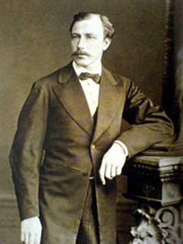

Шапошников Иван Иванович
С сайта Википедия.

Иван Иванович Шапошников (2 июня 1833 — 31 марта 1898) — архитектор, академик архитектуры.
Дед Ивана Шапошникова приехал в Россию при Петре I из Риги, где был бургомистром. При посещении Петром I Прибалтийского края он преподнес царю шапку Мономаха. Петр остался доволен приемом и предложил бургомистру переехать в Россию. По принятии дедом русского подданства Петр дал ему новую фамилию — Шапошников. У деда был один сын Иван, который женился на Воронцовой и у них было четыре сына и шесть дочерей. Один из сыновей — Иван Иванович Шапошников.
В 1844 - 1847 годах И.И. Шапошников учился в Санкт-Петербургском Коммерческом училище, а с 1855 по 1864 годы в Императорской Академии художеств. С 1865 года был преподавателем в Строительном училище (в 1882 году переименованно в Институт Гражданских инженеров); с 1872 года - преподавателем в Технологическом институте, а с 1882 года - архитектором Главного Инженерного управления военного ведомства. В 1870-м стал членом-учредителем С.-Петербургского Императорского Общества архитекторов.
Перестроил церковь Уланского полка в Петергофе, строил дачи в окрестностях Санкт-Петербурга, временную церковь св. Екатерины в Санкт-Петербурге, дом для омовения и отпевания на Преображенском еврейском кладибище, работал на строительстве зданий Александровского сталелитейного завода. Самая яркая и грандиозная постройка - Петербургская Хоральная Синагога. Проект, занявший первое место в отборочном конкурсе, осуществлен в 1880 году совместно с Л.И. Бахманом. Построена синагога в 1883-1893 годах под наблюдением архитектора А.В. Малова.
Был женат на Екатерине Голенищевой-Кутузовой. Двое их детей — сын Илларион и дочь Анна, умерли в пятилетнем возрасте, а дочь Елена, выйдя замуж за всемирно-известного художника, ученого и общественного деятеля Николая Рериха, стала выдающимся философом и писателем ХХ века.